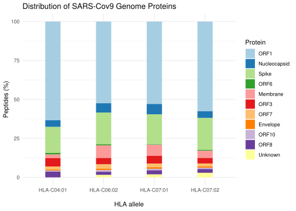
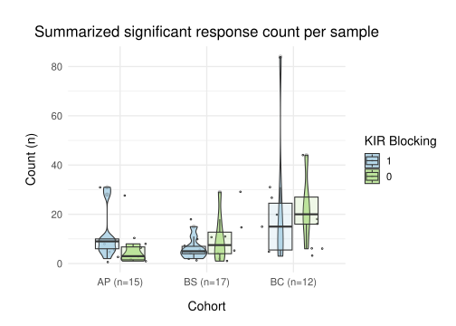
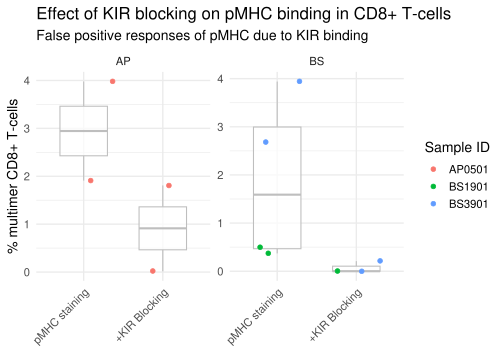
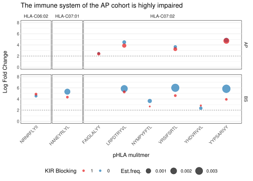
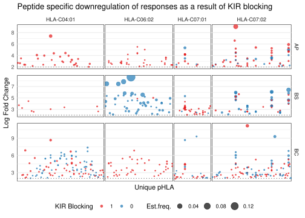
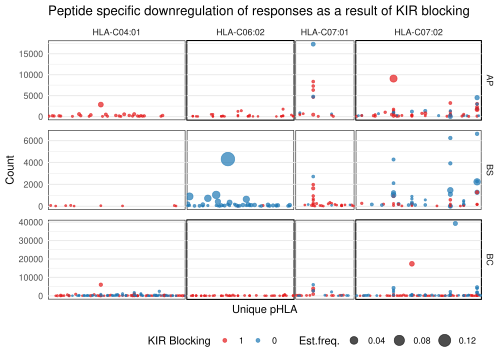

rm(list = ls())
library(quarto)
results_path <- "~/projects/Group25_Project/results"
data_path <- "~/projects/Group25_Project/data"
if (!dir.exists(data_path)) {
stop("The data needs to be loaded first, before running this script. Go to https://dtudk-my.sharepoint.com/:f:/r/personal/s194360_dtu_dk/Documents/R%20for%20BioData?csf=1&web=1&e=FMK1xA and dowload the data folder, then upload it as is.")
}Group 25: Project Report 2023
0_all
Prepping
Clearing the environment, loading the libraries, setting some paths, and checking that the data has been uploaded.
Deleting the previously generated files
The files in data and the files in results should be deleted before starting
# emptying results folder, including subdirectories
invisible(file.remove(list.files(results_path,
full.names = TRUE,
recursive = TRUE)))
unlink(results_path,
recursive = TRUE,
force = TRUE)
# emptying results folder, keeping subdirectories
invisible(file.remove(list.files(data_path,
full.names = TRUE,
recursive = FALSE)))
if (!dir.exists(results_path)) {
dir.create(results_path)
}Including all .qmd files
01_load
Prepping
Clearing the environment, loading the libraries and saving the path to the data folder.
rm(list = ls())
library("tidyverse")
library("readxl")
data_path <- "~/projects/Group25_Project/data"Barracoda
Setting the necessary filenames and folder paths
raw_data_path <- file.path(data_path, "_raw")
raw_data_path_barra <- file.path(raw_data_path, "barracoda")
file_paths_barra <- list.files(path = raw_data_path_barra,
pattern = ".xlsx",
full.names = TRUE)
file_names_barra <- list.files(path = raw_data_path_barra,
pattern = "\\.xlsx",
full.names = FALSE)
outfile_name_barra <- "01_dat_load_barracoda.RDS"
outfile_path_barra <- file.path(data_path, outfile_name_barra)Loading data
Combining all excel files into one tsv file.
Some data included information in the name that could not be found in the file - Eg: not KIR blocked, KIR blocked (_KIR_) and KIR double positive (_KIR_DP)
Therefore this loading step does not exclusively clean, it also augments the data to some extent.
colnames <- c("barcode", "sample", "count.1", "input.1", "input.2", "input.3", "log_fold_change", "p", "-log10(p)", "masked_p (p = 1 if logFC < 0)", "-log10(masked_p)", "count.normalised (edgeR)", "input.normalised (edgeR)", "Number", "HLA", "Protein", "Peptide")
data_b <- map(file_paths_barra,
~read_excel(.x)) |>
map(~select(.x,
all_of(colnames))) |>
map2(file_names_barra,
~mutate(.x,
filename = .y)) |>
map(~filter(.x,
row_number() <= n()-1)) |> # remove last row as it contained a formula
map(~mutate(.x, # fixing a type issue
"-log10(masked_p)" = as.numeric(.x[["-log10(masked_p)"]]))) |>
bind_rows() # merging all tibbles into oneExport data
saveRDS(data_b,
file = outfile_path_barra)Flowjo
Setting the necessary filenames and folder paths
raw_data_path <- file.path(data_path, "_raw")
raw_data_path_flow <- file.path(raw_data_path, "flowjo")
file_paths_flow <- list.files(path = raw_data_path_flow,
pattern = ".xls",
full.names = TRUE)
outfile_name_flow <- "01_dat_load_flowjo.RDS"
outfile_path_flow <- file.path(data_path, outfile_name_flow)Loading data
#### DIVIDE BY 100 when removing %
data_f <- map(file_paths_flow,
~read_excel(.x, col_types = 'text')) |> # reading all files into tibbles
map(~rename(.x,
experiment = "...1")) |> # giving all columns names
map(~filter(.x,
row_number() <= n()-2)) |>
map(~mutate(.x,
across(-experiment,
~as.numeric(str_replace(str_remove(.x, " %"), ",", "."))/100))) |>
bind_rows()Exporting data
saveRDS(data_f,
file = outfile_path_flow)02_clean
Prepping
Clearing the environment, loading the libraries and saving the path to the data folder.
rm(list = ls())
library(tidyverse)
library(stringr)
library(dplyr)
data_path <- "~/projects/Group25_Project/data"Barracoda
Loading the data
data_load_b_path <- file.path(data_path,
"01_dat_load_barracoda.RDS")
outfile_b_path <- file.path(data_path,
'02_dat_clean_barracoda.RDS')
data_load_b <- read_rds(file = data_load_b_path)Removing irrelevant columns
cols_to_keep <- c("barcode", "sample", "count.1", "log_fold_change", "p", "HLA", "Protein", "Peptide", "filename")
data_clean_b <- data_load_b|>
select(all_of(cols_to_keep))Fixing some errors
One sample from the BC cohort did not include “BC” in its sample name. This gets added back in here.
We are not interested in HLA-B type in this project, so any sample related to HLA-B is removed.
data_clean_b <- data_clean_b |>
mutate(sample = ifelse(!grepl("^[A-Z]{2}",
sample), # add 'BC' to sample
paste0("BC",
sample),
sample),
sample = str_replace(sample,
'-',
'')) |> # remove dashes
filter(!HLA=='HLA-B15:01') # removing HLA-BsExtract information from sample column
data_clean_b <- data_clean_b |>
mutate(KIR_blocking = factor(case_when(str_detect(sample, "KIR") ~ "1",
TRUE ~ "0"),
levels = c("1", "0")),
double_positive = factor(case_when(str_detect(sample, "KIR_DP") ~ "1",
TRUE ~ "0"),
levels = c("1", "0")),
.after = sample,) |>
mutate(HLA = factor(HLA)) |>
separate_wider_delim("sample",
delim = "_",
names = c("sample_ID"),
too_many = "drop") |>
mutate(cohort =
factor(
case_when(
grepl("AP", sample_ID) ~ "AP",
grepl("BS", sample_ID) ~ "BS",
grepl("BC", sample_ID) ~ "BC",
TRUE ~ NA ),
levels = c("AP", "BS", "BC")),
.after = "sample_ID")Extract information from protein column
data_clean_b <- data_clean_b |>
mutate(Protein =
factor(
case_when(
str_detect(Protein, "QHD43415_1") ~ "ORF1",
str_detect(Protein, "QHD43423_2") ~ "Nucleocapsid",
str_detect(Protein, "QHD43416_1") ~ "Spike", #surface
str_detect(Protein, "QHD43420_1") ~ "ORF6",
str_detect(Protein, "QHD43419_1") ~ "Membrane",
str_detect(Protein, "QHD43417_1") ~ "ORF3",
str_detect(Protein, "QHD43421_1") ~ "ORF7",
str_detect(Protein, "QHD43418_1") ~ "Envelope",
str_detect(Protein, "QHI42199_1") ~ "ORF10",
str_detect(Protein, "QHD43422_1") ~ "ORF8",
.default = "Unknown"),
levels = c("ORF1", "Nucleocapsid", "Spike", "ORF6", "Membrane", "ORF3",
"ORF7", "Envelope", "ORF10", "ORF8", "Unknown" )))Renaming some columns for consistency
data_clean_b <- data_clean_b |>
rename(protein = Protein,
count = "count.1",
peptide = Peptide
)Export data
saveRDS(data_clean_b,
file = outfile_b_path)Flowjo
Loading the data
data_load_f_path <- file.path(data_path,
"01_dat_load_flowjo.RDS")
data_load_f <- read_rds(file = data_load_f_path)
outfile_f_path <- file.path(data_path,
'02_dat_clean_flowjo.RDS')Removing irrelevant columns
cols_to_keep <- c("experiment", "Lymphocytes/Single Cells/Live cells/CD3/CD8/APC-multimer | Freq. of Parent", "Lymphocytes/Single Cells/Live cells/CD3/CD8/DP | Freq. of Parent", "Lymphocytes/Single Cells/Live cells/CD3/CD8/PE-multimer | Freq. of Parent")
data_clean_f <- data_load_f|>
select(all_of(cols_to_keep))Extract information from experiment column
data_clean_f <- data_clean_f |>
mutate(KIR_blocking =
factor(
case_when(
str_detect(experiment, "KIR") ~ "1",
TRUE ~ "0"),
levels = c("1", "0")),
.after = experiment,) |>
separate_wider_delim(experiment,
delim = "_",
names = c("sample_ID"),
too_many = "drop")Renaming all column names
data_clean_f <- data_clean_f |>
rename(
APC_positive = "Lymphocytes/Single Cells/Live cells/CD3/CD8/APC-multimer | Freq. of Parent",
PE_positive = "Lymphocytes/Single Cells/Live cells/CD3/CD8/PE-multimer | Freq. of Parent",
DP_positive = "Lymphocytes/Single Cells/Live cells/CD3/CD8/DP | Freq. of Parent")Export data
saveRDS(data_clean_f,
file = outfile_f_path)03_augment
Prepping
Clean Work Environment and Load Packages
rm(list = ls())
library(tidyverse)Load Data
data_path <- '~/projects/Group25_Project/data'
data_barra <- read_rds(file = file.path(data_path,
'02_dat_clean_barracoda.RDS'))
data_flow <- read_rds(file = file.path(data_path,
'02_dat_clean_flowjo.RDS'))
outfile_joined_path <- file.path(data_path,
'03_dat_aug_joined.RDS')
outfile_sig_pairing_path <- file.path(data_path,
'03_dat_aug_sig_pairing.RDS')Join Barracoda and Flowjo data
Barracoda and flowjo data are joined into one tibble. They do not overlap perfectly, therfore the innerjoin causes some dataloss from both sources.
Then the estimated frequency is calculated as such: \(Est.Frequency = (count_{pMHC}/count_{total}) * fraction_{PE positive}\)
joined_data <- data_barra |>
inner_join(data_flow,
by=c('sample_ID',
'KIR_blocking')) |>
group_by(sample_ID) |>
mutate(total_count = (sum(count,
na.rm = TRUE)),
count_fraction = (count / total_count), # count fraction
est_frequency = count_fraction*PE_positive) |>
ungroup()Filtering for significant data
We decided that the only significant data was data with a p-value < 0.001 and a log fold change > 2.
NB:
if we filter the significant before the pairing we get 22 significant observations, meaning 11 pairs
if we filter the significant after the pairing we get 41 significant observations, some of which are no longer in pairs
This is why the filtering happens at this step and not later.
sig_data <- joined_data |>
filter(p < 0.001 & log_fold_change > 2)Adding a “paired” column
This column is equal to 1 when there is another row with the same sample_ID, cohort, HLA type and peptide, that has the opposite KIR blocking status (blocked = 1, non-blocked = 0).
This means that the same pMHC multimer has been tested in both experiments, i.e. we have paired data.
joined_data <- joined_data |>
group_by(sample_ID, cohort, HLA, peptide) |>
mutate(paired = factor(
if_else((all(c(0, 1) %in% KIR_blocking)), 1, 0)),
.after = cohort) |>
ungroup()
sig_data <- sig_data |>
group_by(sample_ID, cohort, HLA, peptide) |>
mutate(paired = factor(
if_else((all(c(0, 1) %in% KIR_blocking)), 1, 0)),
.after = cohort) |>
ungroup()
# just for observation, not saved
paired_data <- sig_data |>
filter(paired == 1)We go from 31796 obs to 22 obs (meaning 11 pairs)
Barracoda: 31796 obs (+ 56 Flowjo obs)
Joined: 22819 obs
Significant: 542 obs
Paired: 22 obs
Save to csv
# the joined data, not filtered for significance, but pairs are labelled
saveRDS(joined_data,
file = outfile_joined_path)
# only significant data, pairs are labelled
saveRDS(sig_data,
file = outfile_sig_pairing_path)04_describe
Prepping
rm(list = ls())
library(tidyverse)
library("table1")
library(RColorBrewer)Load Data
data_b <- read_rds(file = '~/projects/Group25_Project/data/02_dat_clean_barracoda.RDS')
data_f <- read_rds(file = '~/projects/Group25_Project/data/02_dat_clean_flowjo.RDS')
data_p <- read_rds(file = '~/projects/Group25_Project/data/03_dat_aug_sig_pairing.RDS')Tables
Barracoda
summary_table <- data_b |>
table1( x = formula(~ KIR_blocking + log_fold_change+protein + HLA| cohort),
data = _)
saveRDS(summary_table,
file = "../results/tableOne_b.RDS")
summary_table| AP (N=13465) |
BS (N=7840) |
BC (N=10491) |
Overall (N=31796) |
|
|---|---|---|---|---|
| KIR_blocking | ||||
| 1 | 7541 (56.0%) | 4019 (51.3%) | 7877 (75.1%) | 19437 (61.1%) |
| 0 | 5924 (44.0%) | 3821 (48.7%) | 2614 (24.9%) | 12359 (38.9%) |
| log_fold_change | ||||
| Mean (SD) | -1.15 (3.29) | -2.25 (3.95) | -1.49 (3.69) | -1.53 (3.62) |
| Median [Min, Max] | -0.182 [-13.4, 9.71] | -0.508 [-12.0, 8.64] | -0.313 [-12.4, 11.2] | -0.290 [-13.4, 11.2] |
| protein | ||||
| ORF1 | 7239 (53.8%) | 4447 (56.7%) | 6103 (58.2%) | 17789 (55.9%) |
| Nucleocapsid | 707 (5.3%) | 434 (5.5%) | 548 (5.2%) | 1689 (5.3%) |
| Spike | 2619 (19.5%) | 1581 (20.2%) | 2062 (19.7%) | 6262 (19.7%) |
| ORF6 | 68 (0.5%) | 42 (0.5%) | 65 (0.6%) | 175 (0.6%) |
| Membrane | 785 (5.8%) | 465 (5.9%) | 545 (5.2%) | 1795 (5.6%) |
| ORF3 | 540 (4.0%) | 345 (4.4%) | 467 (4.5%) | 1352 (4.3%) |
| ORF7 | 288 (2.1%) | 175 (2.2%) | 227 (2.2%) | 690 (2.2%) |
| Envelope | 119 (0.9%) | 73 (0.9%) | 91 (0.9%) | 283 (0.9%) |
| ORF10 | 119 (0.9%) | 73 (0.9%) | 91 (0.9%) | 283 (0.9%) |
| ORF8 | 322 (2.4%) | 205 (2.6%) | 292 (2.8%) | 819 (2.6%) |
| Unknown | 659 (4.9%) | 0 (0%) | 0 (0%) | 659 (2.1%) |
| HLA | ||||
| HLA-C04:01 | 300 (2.2%) | 600 (7.7%) | 2400 (22.9%) | 3300 (10.4%) |
| HLA-C06:02 | 2695 (20.0%) | 1086 (13.9%) | 1164 (11.1%) | 4945 (15.6%) |
| HLA-C07:01 | 4014 (29.8%) | 2950 (37.6%) | 2655 (25.3%) | 9619 (30.3%) |
| HLA-C07:02 | 6456 (47.9%) | 3204 (40.9%) | 4272 (40.7%) | 13932 (43.8%) |
FlowJo
summary_table_f <- data_f |>
mutate(APC_positive = APC_positive*100, # in percent
DP_positive = DP_positive*100, # in percent
PE_positive = PE_positive*100) |> # in percent
mutate(KIR_blocking = factor(KIR_blocking,
levels = c(1, 0),
labels = c("KIR-blocked",
"Not KIR-blocked"))) |>
table1(x = formula(~ APC_positive + DP_positive + PE_positive | KIR_blocking),
data = _)
saveRDS(summary_table_f,
file = "../results/tableOne_f.RDS")
summary_table_f| KIR-blocked (N=30) |
Not KIR-blocked (N=26) |
Overall (N=56) |
|
|---|---|---|---|
| APC_positive | |||
| Mean (SD) | 0.682 (0.626) | 1.43 (2.58) | 1.03 (1.84) |
| Median [Min, Max] | 0.450 [0, 2.20] | 0.305 [0, 9.19] | 0.360 [0, 9.19] |
| DP_positive | |||
| Mean (SD) | 0.210 (0.376) | 0.0319 (0.0905) | 0.128 (0.294) |
| Median [Min, Max] | 0.0510 [0, 1.61] | 0 [0, 0.350] | 0.0105 [0, 1.61] |
| PE_positive | |||
| Mean (SD) | 2.86 (3.18) | 6.32 (9.09) | 4.46 (6.78) |
| Median [Min, Max] | 2.18 [0.100, 17.2] | 3.24 [0.160, 46.1] | 2.44 [0.100, 46.1] |
Descriptive Plots
Protein count distribution
protein_stack <- data_b |>
group_by(HLA, protein) |>
count(name = "count_prot") |>
group_by(HLA) |>
mutate(relative_prot_count = (count_prot / sum(count_prot) ) * 100) |>
ungroup() |>
ggplot(aes(fill = protein,
y = relative_prot_count,
x = HLA)) +
geom_bar( position="stack",
width = 0.3,
stat="identity") +
scale_fill_brewer(palette = "Paired")+
theme_minimal()+
theme(axis.title.x = element_text(margin = margin(t = 15)))+
labs( x = 'HLA allele',
y ='Peptides (%)',
title = 'Distribution of SARS-Cov9 Genome Proteins',
fill = 'Protein')
ggsave("../results/protein_stack.png", bg='white')
protein_stack
Barracoda
# Prepare relevant data
data_counts <- data_p |>
count(cohort, sample_ID, KIR_blocking)
# visual settings
color1 <- brewer.pal(9, "Paired")[c(1, 3)]
text_size <- 14
dot_size <- 0.5
boxplot_width <- 0.6
# plotting
ggplot(data_counts,
aes(x = cohort,
y = n,
fill = KIR_blocking)) +
geom_jitter(size=dot_size,
shape=1) +
geom_violin(width = boxplot_width,
alpha = 0.8)+
geom_boxplot(width = boxplot_width,
alpha = 0.2)+
scale_fill_manual(values=c(color1)) +
scale_x_discrete(labels=c('AP (n=15)',
'BS (n=17)',
'BC (n=12)'))+
theme_minimal(base_size = text_size)+
theme(legend.position = 'right',
plot.caption = element_text(size = 8),
axis.title.x = element_text(margin = margin(t = 15)),
axis.title.y = element_text(margin = margin(r = 15)),
plot.title = element_text(hjust = 0.5),
plot.margin = margin(l = 1,
r = 0.5,
b = 0.5,
t = 1, unit = "cm"))+
labs( x='Cohort',
y='Count (n)',
title = 'Summarized significant response count per sample',
fill = 'KIR Blocking')
ggsave("../results/Boxplot_Nb_Responses.png", bg='white')FlowJo
plot_data <- data_p |> filter(paired == 1) |>
mutate(APC_positive = APC_positive*100,
DP_positive = DP_positive*100,
PE_positive = PE_positive*100) |>
pivot_longer(
cols = c('PE_positive',
'APC_positive'),
names_to = 'Staining',
values_to = 'Fraction') |>
select(Fraction, Staining, sample_ID, cohort) |>
unique()
plot_data# A tibble: 11 × 4
Fraction Staining sample_ID cohort
<dbl> <chr> <chr> <fct>
1 1.91 PE_positive AP0501 AP
2 0.016 APC_positive AP0501 AP
3 3.98 PE_positive AP0501 AP
4 1.81 APC_positive AP0501 AP
5 0.37 PE_positive BS1901 BS
6 0 APC_positive BS1901 BS
7 0.5 PE_positive BS1901 BS
8 3.94 PE_positive BS3901 BS
9 0 APC_positive BS3901 BS
10 2.68 PE_positive BS3901 BS
11 0.21 APC_positive BS3901 BS plot_data |>
ggplot(aes(x = factor(Staining,
levels= c('PE_positive',
'APC_positive')),
y = Fraction,
color = sample_ID)) +
facet_wrap(~cohort, scales='free_y')+
geom_boxplot(width = boxplot_width,
color = 'gray',
alpha = 0.7 )+
geom_jitter(size= 3,
shape= 20) +
scale_x_discrete(labels=c('pMHC staining',
'+KIR Blocking'))+
theme_minimal(base_size = text_size)+
theme(legend.position = 'right',
plot.caption = element_text(size = 8),
axis.text.x = element_text(angle = 45,
vjust = 1,
hjust = 1))+
labs( x=element_blank(),
y='% multimer CD8+ T-cells',
title = 'Effect of KIR blocking on pMHC binding in CD8+ T-cells',
subtitle ='False positive responses of pMHC due to KIR binding',
color = 'Sample ID')
ggsave("../results/paired_sample_boxplot.png", bg='white')Un-paired samples
unpaired <- data_p |>
mutate(APC_positive = APC_positive*100,
DP_positive = DP_positive*100,
PE_positive = PE_positive*100) |>
pivot_longer(
cols = c('PE_positive',
'APC_positive'),
names_to = 'Staining',
values_to = 'Fraction') |>
select(Fraction, Staining, sample_ID, cohort) |>
unique()
ggplot(unpaired,
aes(x = factor(Staining,
levels= c('PE_positive',
'APC_positive')),
y = Fraction,
color = sample_ID)) +
facet_wrap(~cohort,
scales='free_y')+
geom_boxplot(width = boxplot_width,
alpha = 0.2,
color = 'gray')+
geom_jitter(size= 1,
shape= 20) +
scale_fill_brewer(palette = "Paired")+
theme_minimal(base_size = text_size)+
scale_x_discrete(labels=c('Regular pMHC staining',
'+KIR Blocking'))+
theme(legend.position="none",
plot.caption = element_text(size = 8),
axis.text.x = element_text(angle = 45,
vjust = 1,
hjust = 1,
size = 10))+
labs( x=element_blank(),
y='% multimer CD8+ T-cells',
title = 'Evaluating the impact of KIR blocking in the total cohorts ',
fill = 'KIR Blocking')
ggsave("../results/all_samples_boxplot.png", bg='white')05_analysis1
Clean Work Environment
rm(list = ls())Load Packages
library(tidyverse)
library(RColorBrewer)Load Data
# only significant data, with labels for pairing
data_sig_pairing <- read_rds(file = '~/projects/Group25_Project/data/03_dat_aug_sig_pairing.RDS')
# all data, with labels for pairing
data_joined <- read_rds(file = '~/projects/Group25_Project/data/03_dat_aug_joined.RDS')Plotting paired samples
# Visualisation constants
line_color ='#636363'
textsize = 10
color1 <- brewer.pal(9, "Paired")[c(6,2)]
paired_data <- data_sig_pairing |>
filter(paired == 1)Log-fold-change vs epitope
paired_data |>
ggplot(aes(x = peptide,
y = log_fold_change,
color = KIR_blocking)) +
facet_grid(cohort ~HLA,
scales = 'free_x',
space='free_x') +
geom_point(aes(size = est_frequency),
alpha=0.7)+
scale_color_manual(values=c(color1)) +
scale_size(range = c(1, 7)) +
ylim(0,8) +
geom_hline(yintercept = 2,
color= line_color,
linetype = 3) +
theme_minimal() +
theme(axis.text.x = element_text(angle = 45,
vjust = 1,
hjust = 1,
margin = margin(b = 10)),
axis.text.y = element_text(margin = margin(l = 15)),
panel.margin.x=unit(0.1, "lines"),
panel.margin.y=unit(0.7, "lines"),
legend.position = 'bottom',
legend.justification = c("center", "top"),
panel.grid.major.x = element_blank(),
panel.background = element_rect(fill = NA,
color = "black"),
panel.grid.minor.x = element_line(color = line_color,
linetype = 1,
size = 0.2)) +
labs(title='The immune system of the AP cohort is highly impaired',
x="pHLA mulitmer",
y="Log Fold Change",
color= 'KIR Blocking',
size='Est.freq.') Warning: The `size` argument of `element_line()` is deprecated as of ggplot2 3.4.0.
ℹ Please use the `linewidth` argument instead.Warning: The `panel.margin.x` argument of `theme()` is deprecated as of ggplot2 2.2.0.
ℹ Please use the `panel.spacing.x` argument instead.Warning: The `panel.margin.y` argument of `theme()` is deprecated as of ggplot2 2.2.0.
ℹ Please use the `panel.spacing.y` argument instead.
ggsave("../results/paired_logfold.png", bg='white')Count vs epitope
paired_data |>
ggplot(aes(x = peptide,
y = count,
color = KIR_blocking)) +
facet_grid(cohort ~HLA,
scales = 'free_x',
space='free_x') +
geom_point(aes(size = est_frequency),
alpha=0.7) +
scale_color_manual(values=c(color1)) +
scale_size(range = c(2, 7)) +
theme_minimal() +
ylim(0, 7000) +
theme(axis.text.x = element_text(angle = 45,
vjust = 1,
hjust = 1,
margin = margin(b = 10)),
axis.text.y = element_text(margin = margin(l = 15)),
panel.margin.x=unit(0.1, "lines"),
panel.margin.y=unit(0.7, "lines"),
legend.position = 'bottom',
legend.justification = c("right", "top"),
panel.grid.major.x = element_blank(),
panel.background = element_rect(fill = NA,
color = "black"),
panel.grid.minor.x = element_line(color = line_color,
linetype = 1,
size = 0.2)) +
labs(title='Distribution of peptide responses across HLA-C allotypes',
x="pHLA multimer",
y="Count (n)",
color= 'KIR blocking',
size='Est.freq.') 
ggsave("../results/paired_count.png", bg='white')All significant samples
Log-Fold-Change vs epitope
# Tibble for plotting
log_data <- data_joined |>
filter(log_fold_change > 0 & p < 0.001)
log_data |>
ggplot(aes( x = peptide,
y = log_fold_change,
color = KIR_blocking)) +
facet_grid(cohort ~HLA,
scales = 'free',
space='free') +
geom_point(aes(size = est_frequency),
alpha=0.7)+
scale_color_manual(values=c(color1)) +
scale_size(range = c(0.5, 6)) +
geom_hline(yintercept = 2,
color= line_color,
linetype = 3) +
theme_minimal() +
theme(axis.text.x = element_blank(),
panel.margin.x=unit(0.1, "lines"),
panel.margin.y=unit(0.7, "lines"),
legend.position = 'bottom',
legend.justification = c("center"),
panel.grid.major.x = element_blank(),
panel.background = element_rect(fill = NA,
color = "black"),
panel.grid.minor.x = element_line(color = line_color,
linetype = 1,
size = 0.2)) +
labs(title='Peptide specific downregulation of responses as a result of KIR blocking',
x="Unique pHLA",
y="Log Fold Change",
color= 'KIR Blocking',
size='Est.freq.') 
ggsave("../results/all_logfold.png", bg='white')Count vs epitope
# Tibble for plotting
signi_data <- data_joined |>
filter(log_fold_change > 0 & p < 0.001)
signi_data |>
ggplot(aes(x = peptide,
y = count,
color = KIR_blocking))+
facet_grid(cohort ~HLA,
scales = 'free',
space='free_x') +
geom_point(aes(size = est_frequency),
alpha=0.7) +
scale_color_manual(values=c(color1)) +
scale_size(range = c(0.5, 6)) +
theme_minimal() +
theme(axis.text.x = element_blank(),
panel.margin.x=unit(0.1, "lines"),
panel.margin.y=unit(0.7, "lines"),
legend.position = 'bottom',
legend.justification = c("right", "top"),
panel.grid.major.x = element_blank(),
panel.background = element_rect(fill = NA, color = "black"),
panel.grid.minor.x = element_line(color = line_color, linetype = 1, size = 0.2)) +
labs(title='Peptide specific downregulation of responses as a result of KIR blocking',
x="Unique pHLA",
y="Count",
color= 'KIR Blocking',
size='Est.freq.') 
ggsave("../results/all_count.png", bg='white')06_analysis2
Prepping
Clean Work Environment and Load Packages
rm(list = ls())
library(tidyverse)
library(RColorBrewer)Loading data
data_path <- '~/projects/Group25_Project/data'
data_joined <- read_rds(file = file.path(data_path,
'03_dat_aug_joined.RDS'))
data_sig_pairing <- read_rds(file = file.path(data_path,
'03_dat_aug_sig_pairing.RDS'))Defining some settings once
# alpha, size and colors for volcano plots
a <- 0.25 # alpha
s <- 0.005 # size
colors <- brewer.pal(9, "Paired")[c(2, 6)]
volcano_colors <- c(colors[1], colors[2], 'grey')
# adding a response level
data_joined <- data_joined |>
mutate(response =
factor(
case_when(log_fold_change > 2 & p < 0.001 ~ "Positive",
log_fold_change < -2 & p <= 0.001 ~ "Negative",
TRUE ~ "Insignificant"),
levels = c("Positive", "Negative", "Insignificant")))Volcano plots, grouped by cohort and HLA
data_joined |>
group_by(HLA, cohort) |>
ggplot(aes(x = log_fold_change,
y = - log10(p),
color = response)) +
theme_bw() +
geom_vline(xintercept = 2,
linetype = "dashed",
color = "grey") +
geom_vline(xintercept = -2,
linetype = "dashed",
color = "grey") +
geom_vline(xintercept = 0,
linetype = "solid",
color = "grey") +
geom_hline(yintercept = -log10(0.001),
linetype = "dashed",
color = "grey") +
geom_point(alpha = a, size = s) +
labs(x = "Fold change (log2)",
y = "P-value (-log10)") +
scale_color_manual(values = volcano_colors) +
labs(x = "Fold change (log2)",
y = "P-value (-log10)",
color = "Response",
title = "Response levels accross all cohorts, and HLA types",
subtitle = "For both paired and unpaired data") +
guides(color = guide_legend(override.aes = list(size=2,
alpha = 0.75))) +
theme(axis.title.y = element_text(margin = margin(t = 0,
r = 10,
b = 0,
l = 0)),
axis.title.x = element_text(margin = margin(t = 10,
r = 0,
b = 0,
l = 0))) +
facet_grid(HLA ~ cohort)
ggsave("../results/Volcano_cohorts_HLA.png",
bg = 'white')Volcano plots all cohorts
data_joined |>
group_by(HLA, cohort) |>
ggplot(aes(x = log_fold_change,
y = - log10(p),
color = response)) +
theme_bw() +
geom_vline(xintercept = 2,
linetype = "dashed",
color = "grey") +
geom_vline(xintercept = -2,
linetype = "dashed",
color = "grey") +
geom_vline(xintercept = 0,
linetype = "solid",
color = "grey") +
geom_hline(yintercept = -log10(0.001),
linetype = "dashed",
color = "grey") +
geom_point(alpha = a, size = s) +
labs(x = "Fold change (log2)",
y = "P-value (-log10)") +
scale_color_manual(values = volcano_colors) +
labs(x = "Fold change (log2)",
y = "P-value (-log10)",
color = "Response",
title = "Response levels accross all cohorts, both paired and unpaired data",
subtitle = "AP = , BS =, BC = ") +
guides(color = guide_legend(override.aes = list(size=2,
alpha = 0.75))) +
theme(axis.title.y = element_text(margin = margin(t = 0,
r = 10,
b = 0,
l = 0)),
axis.title.x = element_text(margin = margin(t = 10,
r = 0,
b = 0,
l = 0)),
legend.position = c(0.78, 0.25)) +
facet_wrap(~ cohort,
nrow = 2)
ggsave("../results/Volcano_cohorts.png",
bg = 'white')Volcano plot for all data
data_joined |>
ggplot(aes(x = log_fold_change,
y = - log10(p),
color = response)) +
theme_bw() +
geom_vline(xintercept = 2,
linetype = "dashed",
color = "grey") +
geom_vline(xintercept = -2,
linetype = "dashed",
color = "grey") +
geom_vline(xintercept = 0,
linetype = "solid",
color = "grey") +
geom_hline(yintercept = -log10(0.001),
linetype = "dashed",
color = "grey") +
geom_point(alpha = a, size = s) +
scale_color_manual(values = volcano_colors) +
labs(x = "Fold change (log2)",
y = "P-value (-log10)",
color = "Response",
title = "Response levels accross whole dataset",
subtitle = "Only small subset (n = 542) is significant at p < 0.001 and LFC >= 2") +
guides(color = guide_legend(override.aes = list(size=2,
alpha = 0.75))) +
theme(axis.title.y = element_text(margin = margin(t = 0,
r = 10,
b = 0,
l = 0)),
axis.title.x = element_text(margin = margin(t = 10,
r = 0,
b = 0,
l = 0)))
ggsave("../results/Volcano_all.png",
bg = 'white')